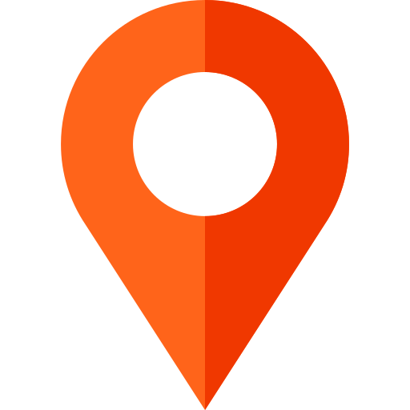
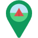

<link rel="stylesheet" href="/static/plugins/leaflet/leaflet.css" />
<script src="/static/plugins/leaflet/leaflet.js"></script>

<link rel="stylesheet" href="https://cdnjs.cloudflare.com/ajax/libs/leaflet.draw/0.4.2/leaflet.draw.css" />
<script src="https://cdnjs.cloudflare.com/ajax/libs/leaflet.draw/0.4.2/leaflet.draw.js"></script>


<link rel="stylesheet" href="/static/plugins/easy-button/easy-button.css">
<script src="/static/plugins/easy-button/easy-button.js"></script> 

<link rel="stylesheet" href="/static/plugins/leaflet-locatecontrol-0.76.0/dist/L.Control.Locate.min.css" />
<script src="/static/plugins/leaflet-locatecontrol-0.76.0/dist/L.Control.Locate.min.js" charset="utf-8"></script>

<link rel="stylesheet" href="https://cdn.jsdelivr.net/npm/font-awesome@4.7.0/css/font-awesome.min.css">

<script src="/static/plugins/leaflet-routing-machine-3.2.12/dist/leaflet-routing-machine.js"></script>
<link rel="stylesheet" href="/static/plugins/leaflet-routing-machine-3.2.12/dist/leaflet-routing-machine.css">

<script src="/static/plugins/control-geocoder/Control.Geocoder.js"></script>

<script src="/static/js/jquery-3.6.0.min.js"></script>


<div id="mapid"></div>

<link rel="stylesheet" href="/static/css/map.css">
<!-- <style>
    .results {
        background-color: white;
        opacity: 0.8;
        position: absolute;
        top: 12px;
        right: 12px;
        width: 320px;
        height: 480px;
        overflow-y: scroll;
    }
    </style> -->
<script>

    var map = L.map('mapid').setView([21.372538517232353, 105.5548151996359], 11.75);
    var osm = L.tileLayer('https://{s}.tile.openstreetmap.org/{z}/{x}/{y}.png', {
        attribution: '&copy; <a href="https://www.openstreetmap.org/copyright">OpenStreetMap</a> contributors'
    }).addTo(map);

    mylocation = L.control.locate({
        position: 'topleft',
        strings: {
            title: "My location",
            popup: 'You are here<br><button id="useToStart">use this as start point</button><br><button id="useToEnd">use as end point</button>',
        },
    }).addTo(map);

    //get current location 
    var myloca
    map.on('locationfound', function (self) {
    myloca = [self.latlng.lat, self.latlng.lng]
    });

    map.on('popupopen', function (self) {
        $('#useToStart').click(function () {
            control.spliceWaypoints(0, 1, myloca);
        });

        $('#useToEnd').click(function () {
            control.spliceWaypoints(1, 1, myloca);
        });
    });

    function iconPlace(feature, latlng) {
        var iconCus = L.icon({
            iconUrl: "../../static/images/icons/place-icon.png",
            iconSize: [20, 20],
            iconAncho: [22, 94],
            popupAncho: [-3, -76]
        })
        return L.marker(latlng, { icon: iconCus })
    }
    function iconArea(feature, latlng) {
        var iconCus = L.icon({
            iconUrl: "../../static/images/icons/area-icon.png",
            iconSize: [20, 20],
            iconAncho: [22, 94],
            popupAncho: [-3, -76]
        })
        return L.marker(latlng, { icon: iconCus })
    }
    function iconService(feature, latlng) {
        var iconCus = L.icon({
            iconUrl: "../../static/images/icons/services-icon.png",
            iconSize: [20, 20],
            iconAncho: [22, 94],
            popupAncho: [-3, -76]
        })
        return L.marker(latlng, { icon: iconCus })
    }
    function getAddress(latlng){
        var geocoder = $.getJSON('https://nominatim.openstreetmap.org/reverse?format=json&lat='+latlng[0]+'&lon='+latlng[1]+'&zoom=18&addressdetails=1', function (data) {
            return data.display_name
        })
    }
//     $.get('https://nominatim.openstreetmap.org/reverse?format=jsonv2&lat=47.217954&lon=-1.552918', function(data){
//     console.log(data.address.road);
// });
    //Feature 
    function placeFeature(feature, layer) {
        feature.layer = layer;
        if (feature.properties) {
            console.log(feature.properties.coordinates)
            layer.bindPopup("<b>Tên địa danh: </b>" + feature.properties.title + "<br>"
            // + "<b>Địa chỉ: </b>" + getAddress(feature.properties.coordinates) + "<br>"
            + "<b>Hình ảnh: </b>" + "" + "<br>"
            )

        }
    }

    function areaFeature(feature, layer) {
        feature.layer = layer;
        if (feature.properties) {

            layer.bindPopup("<b>Khu du lịch: </b>" + feature.properties.name + "<br>")
        }
    }

    function serviceFeature(feature, layer) {
        feature.layer = layer;
        if (feature.properties) {
            layer.bindPopup("<b>Loại dịch vụ: </b>" + feature.properties.type + "<br>"
            + "<b>Tên: </b>" + feature.properties.name + "<br>"
            + "<b>Địa chỉ: </b>" + feature.properties.address + "<br>"
			+ "<b>Số điện thoại: </b>" + feature.properties.phone + "<br>"
			+ "<b>Email: </b>" + feature.properties.email + "<br>"
            + "<b>Hình ảnh: </b>" + "" + "<br>"
            + '<button class="thisIsStartPoint" data-lat="'+ feature.geometry.coordinates[1] +'" data-lng="'+ feature.geometry.coordinates[0]+'">Use this as start point</button>' + "<br>"
            + '<button class="thisIsEndPoint" data-lat="'+ feature.geometry.coordinates[1] +'" data-lng="'+ feature.geometry.coordinates[0]+'">Use this as end point</button>' + "<br>"

            + "<a>Xem thêm</a>" + "<br>"
            ).on("popupopen", function() {
                $(".thisIsStartPoint").click(function() {
                    var a = parseFloat($(this).attr('data-lat'));
                    var b = parseFloat($(this).attr('data-lng'));
                    var c = [a, b];
                    control.spliceWaypoints(0, 1, c);
                })
                $(".thisIsEndPoint").click(function () {
                    var a = parseFloat($(this).attr('data-lat'));
                    var b = parseFloat($(this).attr('data-lng'));
                    var c = [a, b];
                    control.spliceWaypoints(1, 1, c);
                })

            })

        }
    }


    //Layer Group
    var markersLayer = new L.LayerGroup();

    //Search
    // var searchTree = L.control.fuseSearch({
    //     position: 'topleft'
    // })
    // searchTree.addTo(map);

    // var searchBuilding = L.control.fuseSearch()
    // searchBuilding.addTo(map);

    // $("#btn").click(function (e) {

    // })


    // 
    // Get API tree, building
    function getAPI(link) {
        var overlay = null;
        $.ajax({
            type: "GET",
            datatype: "JSON",
            url: link,
            async: !1,
            success: function (response) {
                console.log(response)
                if (link == "/api/v1/places") {

                    // searchTree.indexFeatures(response.features, ['loaicay', 'chieucao', 'id']);

                    overlay = L.geoJSON(response, {
                        pointToLayer: iconPlace, onEachFeature: placeFeature
                    })
                    markersLayer.addLayer(overlay)
                    // .addTo(map)
                }
                else if (link == "/api/v1/areas") {

                    // searchBuilding.indexFeatures(response.features, ['loaiNha', 'soTang', 'diaChi']);

                    overlay = L.geoJSON(response, {
                        pointToLayer: iconArea, onEachFeature: areaFeature
                    })
                    markersLayer.addLayer(overlay)
                }
                else if (link == "/api/v1/services") {

                    // searchBuilding.indexFeatures(response.features, ['loaiNha', 'soTang', 'diaChi']);

                    overlay = L.geoJSON(response, {
                        pointToLayer: iconService, onEachFeature: serviceFeature
                    })
                    markersLayer.addLayer(overlay)
                }
            }
        })
        return overlay
    }
    //layer tree, building
    var place = getAPI("/api/v1/places")
    var area = getAPI("/api/v1/areas")
    var service = getAPI("/api/v1/services")

    console.log(place)
    //add layer to map
    map.addLayer(markersLayer)

    // Control layers
    var baseLayers = {
        "Open Street Maps": osm
    }
    var overlays = {
        "Place": place,
        "Area": area,
        "Service": service
    }

    L.control.layers(baseLayers, overlays).addTo(map)


    //Control routing
    var rlayer = null;
    var check = true;

    var control = L.Routing.control({
        router: L.Routing.osrmv1({
            // serviceUrl: L.osrmv1().getServiceUrl(),
            liveTraffic: true,
            profile: 'Driving',
        }),
        geocoder: L.Control.Geocoder.nominatim(),
        routeWhileDragging: true,
        reverseWaypoints: true
        })

    map.addControl(control)

    L.easyButton('fa-level-up',
        function () {
            console.log(check + "okeee")
            if (control._map) {
                // check = false
                map.removeControl(control)
            }
            else {
                // check = true
                map.addControl(control)
            }
        }).addTo(map);


    // L.Routing.errorControl(control).addTo(map);

    //map legend
    var legend = L.control({ position: 'bottomright' })
    legend.onAdd = function (map) {
        var div = L.DomUtil.create('div', 'info')
        div.innerHTML += ': Place<br>'
        div.innerHTML += ': Service<br>'
        div.innerHTML += ': Area<br>'
        return div
    }
    legend.addTo(map)

    //draw Item
    drawnItems = L.featureGroup().addTo(map);
    map.addControl(new L.Control.Draw({
        edit: {
            featureGroup: drawnItems,
            poly: {
                allowIntersection: false
            }
        },
        draw: {
            polygon: false,
            circle: false,
            polyline: false,
            rectangle: false,
            circlemarker: false

        }
    }));
        // Truncate value based on number of decimals
        var _round = function(num, len) {
            return Math.round(num*(Math.pow(10, len)))/(Math.pow(10, len));
        };
        // Helper method to format LatLng object (x.xxxxxx, y.yyyyyy)
        var strLatLng = function(latlng) {
            return _round(latlng.lat, 6)+", "+_round(latlng.lng, 6);
        };

        // Generate popup content based on layer type
        // - Returns HTML string, or null if unknown object
        var getPopupContent = function(layer) {
            // Marker - add lat/long
            if (layer instanceof L.Marker || layer instanceof L.CircleMarker) {
                return strLatLng(layer.getLatLng());
            // Circle - lat/long, radius
            } else if (layer instanceof L.Circle) {
                var center = layer.getLatLng(),
                    radius = layer.getRadius();
                return "Center: "+strLatLng(center)+"<br />"
                      +"Radius: "+_round(radius, 2)+" m";
            // Rectangle/Polygon - area
            } else if (layer instanceof L.Polygon) {
                var latlngs = layer._defaultShape ? layer._defaultShape() : layer.getLatLngs(),
                    area = L.GeometryUtil.geodesicArea(latlngs);
                return "Area: "+L.GeometryUtil.readableArea(area, true);
            // Polyline - distance
            } else if (layer instanceof L.Polyline) {
                var latlngs = layer._defaultShape ? layer._defaultShape() : layer.getLatLngs(),
                    distance = 0;
                if (latlngs.length < 2) {
                    return "Distance: N/A";
                } else {
                    for (var i = 0; i < latlngs.length-1; i++) {
                        distance += latlngs[i].distanceTo(latlngs[i+1]);
                    }
                    return "Distance: "+_round(distance, 2)+" m";
                }
            }
            return null;
        };
    map.on(L.Draw.Event.CREATED, function(event) {
            var layer = event.layer;
            var content = getPopupContent(layer)+'<br><input type="checkbox" id="checkService" name="check" value="Service">'
            +'<label for="checkService">Service</label><br>'
            +'<input type="checkbox" id="checkArea" name="check" value="Area">'
            +'<label for="checkArea">Area</label><br>'
            +'<input type="checkbox" id="checkPlace" name="check" value="Place">'
            +'<label for="checkPlace">Place</label><br>'
            +'<button id="save">Save</button>';
            if (content !== null) {
                layer.bindPopup(content).on("popupopen", function() {
                    $("input:checkbox").on('click', function() {
                    // in the handler, 'this' refers to the box clicked on
                    var $box = $(this);
                    console.log($box.val())
                    if ($box.is(":checked")) {
                        // the name of the box is retrieved using the .attr() method
                        // as it is assumed and expected to be immutable
                        var group = "input:checkbox[name='" + $box.attr("name") + "']";
                        console.log(group)
                        // the checked state of the group/box on the other hand will change
                        // and the current value is retrieved using .prop() method
                        $(group).prop("checked", false);
                        $box.prop("checked", true);
                    } else {
                        $box.prop("checked", false);
                    }});

                    $("#save").click(function(){
                        var check = $("input:checkbox:checked").val()
                        console.log(check)
                        function toDb(type){
                            console.log(type)
                            var lattt = layer.getLatLng()
                            console.log(lattt)
                            var jsonn = {
                                "typeMarker": type,
                                "geometry": {
                                    "type": "Point",
                                    "coordinates": [lattt['lng'], lattt['lat']]
                                },
                            }
                            console.log(jsonn)
                            return jsonn
                        }
                        if (check == "Service"){
                            var geoJSON = toDb("Service")
                                $.ajax({
                                    url: "/createNewItem",
                                    type: "POST",
                                    contentType: "application/json",
                                    data: JSON.stringify(geoJSON),
                                    success: function (data) { }
                                });
                        }
                        else if (check == "Area"){
                            var geoJSON = toDb("Area")
                                $.ajax({
                                    url: "/createNewItem",
                                    type: "POST",
                                    contentType: "application/json",
                                    data: JSON.stringify(geoJSON),
                                    success: function (data) { }
                                });
                        }
                        else if (check == "Place"){
                            var geoJSON = toDb("Place")
                                $.ajax({
                                    url: "/createNewItem",
                                    type: "POST",
                                    contentType: "application/json",
                                    data: JSON.stringify(geoJSON),
                                    success: function (data) { }
                                });
                        }
                    })
            });
            }
            drawnItems.addLayer(layer);
        });
    // map.on('draw:created', function (event) {
    //     var layer = event.layer;
    //     // layer.on('click', layerClick);
    //     drawnItems.addLayer(layer);

    //     // var geoJSON = drawnItems.toGeoJSON();

    //     // $.ajax({
    //     //     url: "/createNewItem",
    //     //     type: "POST",
    //     //     contentType: "application/json",
    //     //     data: JSON.stringify(geoJSON),
    //     //     success: function (data) { }
    //     // });
    // });

</script>